Mes projets pour l’épreuve E5 📚
Projet La Fleur V2 🌸
Projet personnel (réalisé seul)
Application e-commerce développée en PHP & MySQL. Gestion des catégories, inscription/connexion sécurisée (PDO + hashage), base de données relationnelle dynamique.
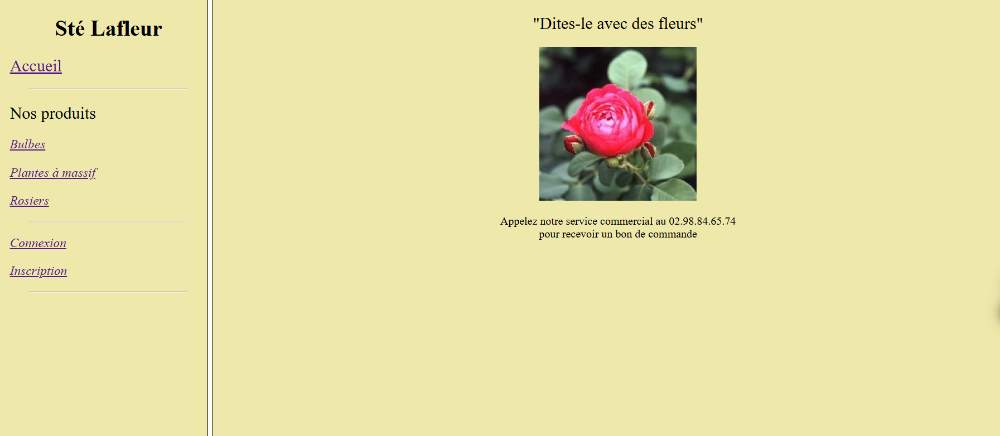 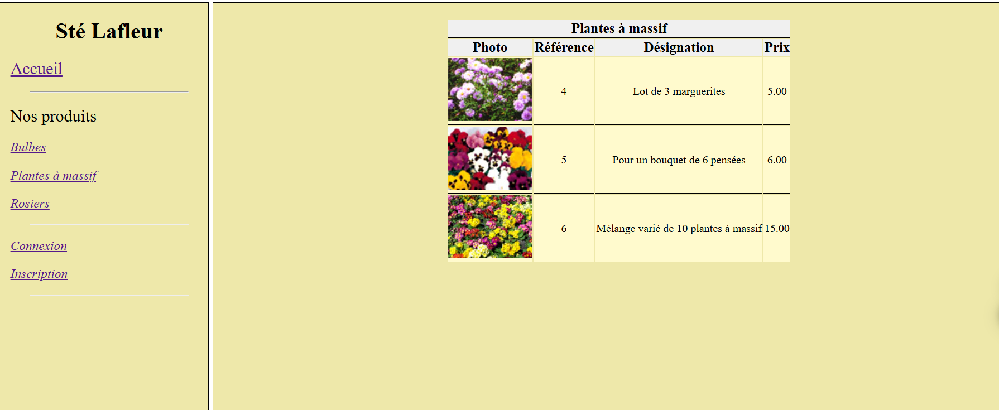Compétences mobilisées :
Base de données
La base de données MySQL est composée des tables client, categorie, produit et commande.
Chaque produit est lié à une catégorie, et chaque commande est associée à un client.
Les données sont manipulées via des requêtes PDO sécurisées. J’ai également implémenté une gestion des utilisateurs avec mots de passe hachés.
Espace Connexion
L'espace de connexion permet aux utilisateurs de s'inscrire et de se connecter. Les mots de passe sont hachés avec sécurité. 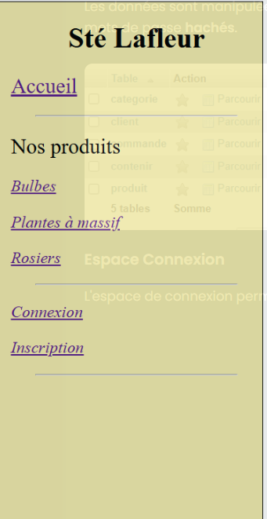
Site vitrine WordPress – Kayak-Mor 🌊
Projet personnel (réalisé de manière autonome)
Ce projet consistait à créer un site vitrine moderne et responsive pour un club de kayak fictif nommé Kayak-Mor. L’objectif était de promouvoir les activités du club, améliorer la navigation, le design, l’expérience utilisateur, et optimiser sa visibilité SEO.
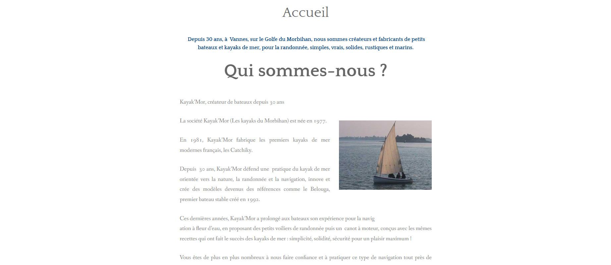Le site a été développé localement sous XAMPP avec WordPress. J’ai utilisé un thème responsive personnalisé et installé des plugins utiles :
- Contact Form 7 pour les formulaires
- Yoast SEO pour le référencement
- WP Responsive Menu pour une navigation mobile fluide
- Lightbox pour la galerie d’images
Le site est entièrement responsive, accessible, structuré avec une hiérarchie HTML sémantique et propose une expérience fluide sur tous types d’écrans.
Comparatif avant / après (design & structure)
Version de base
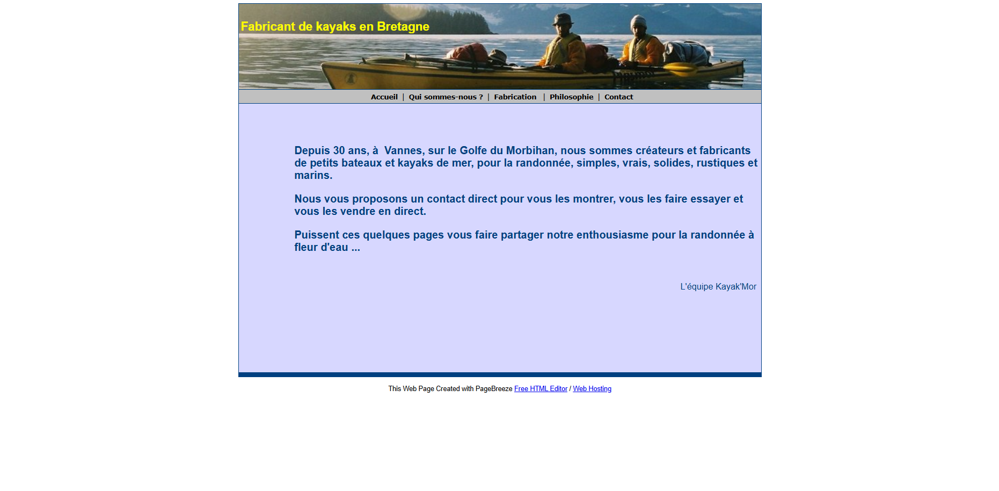- Design dépassé
- Navigation peu intuitive
- Pas adapté aux mobiles
Version Refonte
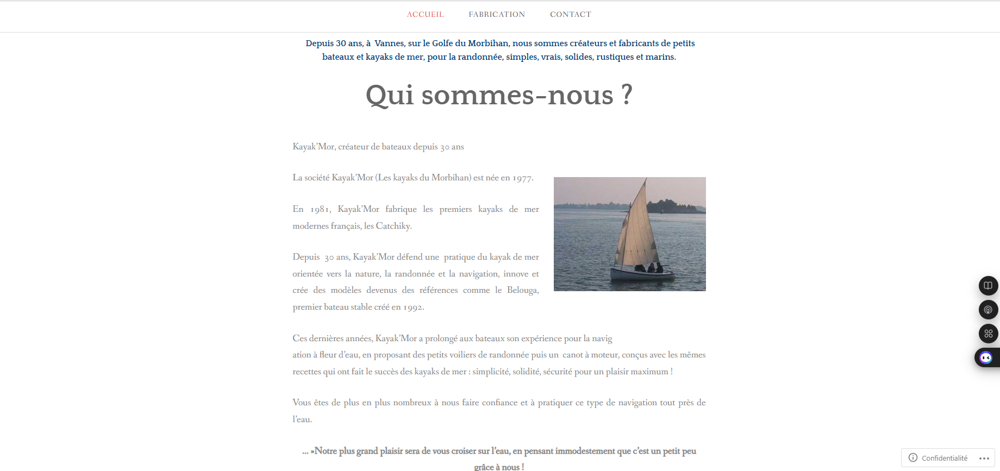- Thème responsive & moderne
- Expérience utilisateur améliorée
- Meilleure visibilité SEO
Compétences mobilisées :
GSB - Application Client Java ☕
Projet en binôme
Durant la deuxième année, j'ai eu l'opportunité de travailler avec un des élèves redoublant, sur l'entreprise dite "fictive" Galaxy-Swiss Bourdin.
Objectif: Création d’un outil de gestion d’utilisateurs avec Java. Interface graphique, gestion des profils, CRUD complet avec base de données.
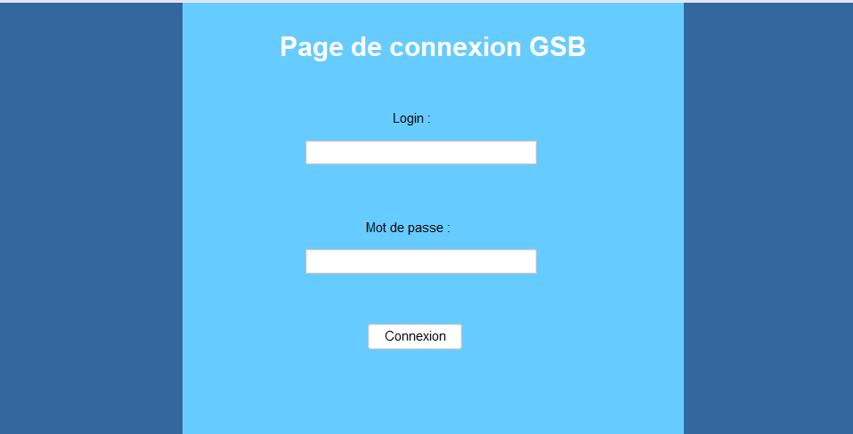Légende: Login GSB

Légende: Ajouter GSB
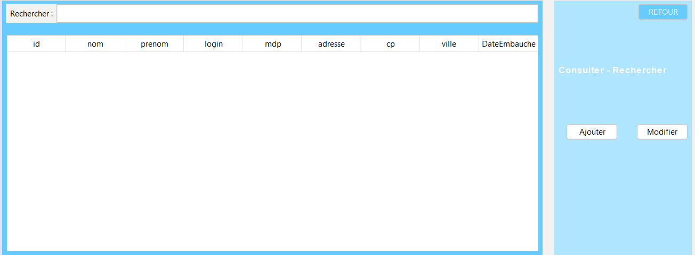Légende: Rechercher GSB
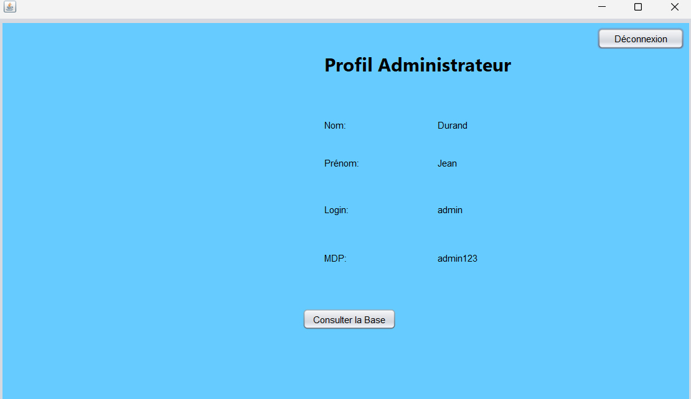Légende: Profil GSB
Compétences mobilisées :
Base de données
La base de données est relationnelle (MySQL) avec des tables clés comme fichefrais, visiteur, lignefraisforfait et etat.
Elle permet de gérer les états des fiches de frais, les montants, les utilisateurs et leurs rôles (visiteur ou comptable).
Avec un ajout de la table Visiteur pour différencier les visiteurs et les admin.
Légende: Base de données GSB
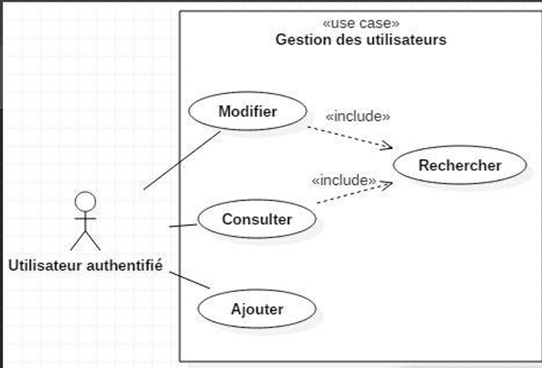
Légende: Diagramme de Cas d'utilisation de GSB JAVA
Projet avec Mondays
Pour ce projet, j'ai eu l'occasion de travailler en groupe, ce qui a favorisé une collaboration efficace et une répartition équilibrée des tâches. Afin de faciliter la gestion de projet et la coordination de notre équipe, on m'a recommander d'utiliser Mondays, un outil de gestion de projet en ligne.
Grâce à Mondays, nous avons pu visualiser l'état d'avancement de chaque tâche, identifier les priorités et maintenir une communication fluide entre les membres de l'équipe. Nous pouvions facilement ajouter des commentaires, partager des ressources et suivre les mises à jour en temps réel.
L'utilisation de Mondays a grandement facilité la collaboration et la coordination entre les membres de l'équipe. Nous avons pu travailler de manière plus organisée, en gardant une vue d'ensemble sur le projet et en favorisant la transparence dans la répartition des responsabilités.
Légende: Projet Mondays Exemple
AppliFrais - API Web REST 🔄
Projet de deuxième année (réalisé en groupe)
Le projet AppliFrais consiste à créer une API REST sécurisée pour gérer les fiches de frais au sein de l’organisation fictive GSB (Galaxy-Swiss Bourdin).
Cette API permet aux visiteurs de déposer leurs frais et aux comptables de les consulter, valider ou refuser. L’accès est sécurisé par un système de token JWT.
Le projet a été développé avec PHP (framework CodeIgniter 4) et MySQL.
Fonctionnalités principales :
- Connexion et authentification 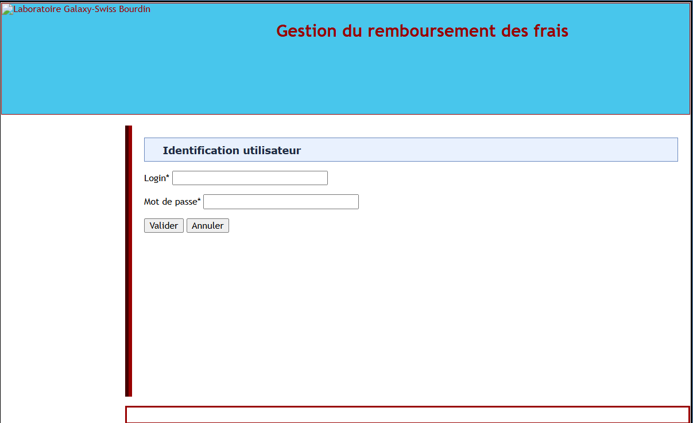
- Rôles utilisateur : visiteur / comptable 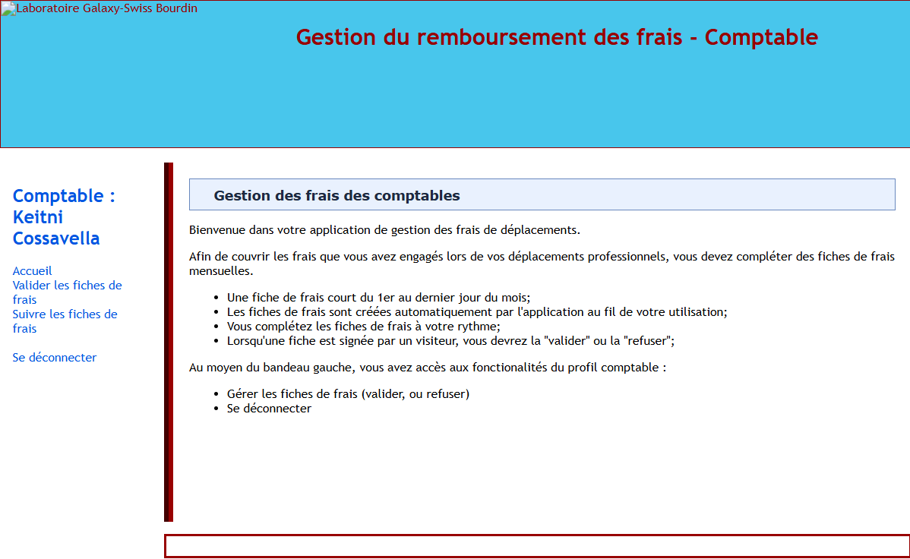
- Gestion des fiches de frais (CRUD) 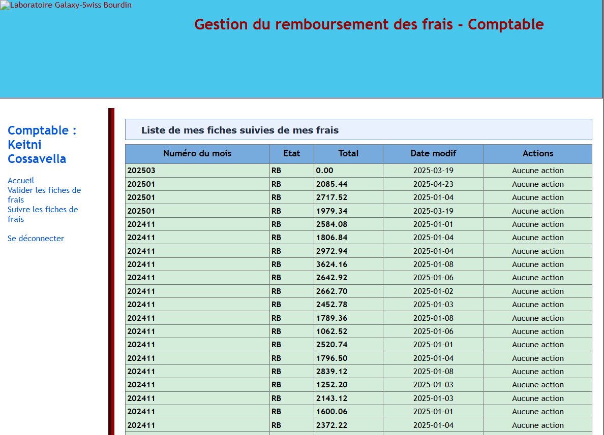
Légende: Login Applifrais
Légende: Rôle comptable Applifrais
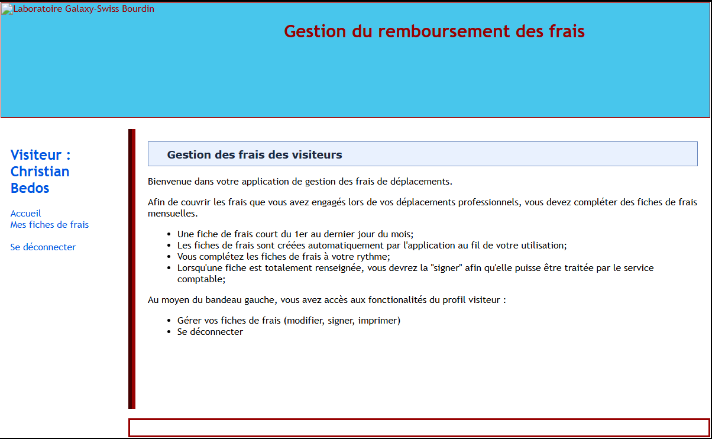Légende: Rôle Visiteur Applifrais
Légende: Gestion de Frais Comptable Applifrais
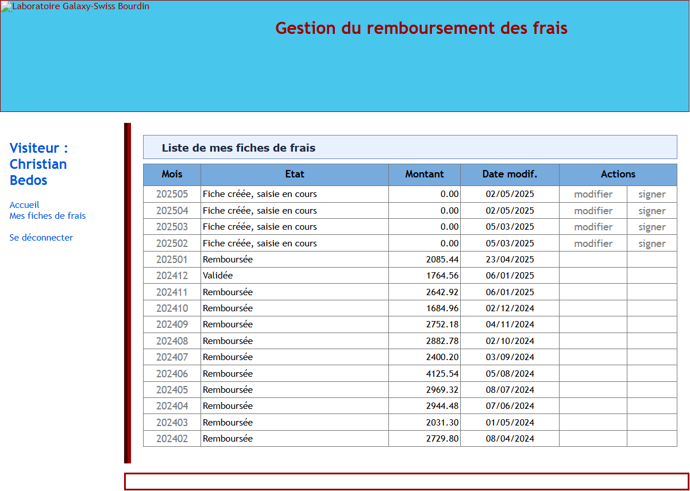Légende: Gestion de Frais Visiteur Applifrais
Compétences mobilisées :
Base de données
La base de données est relationnelle (MySQL) avec des tables clés comme fichefrais, visiteur, lignefraisforfait et etat.
Elle permet de gérer les états des fiches de frais, les montants, les utilisateurs et leurs rôles (visiteur ou comptable).
Avec un ajout de la table Visiteur pour différencier les visiteurs et les admin.
Légende: Base de données GSB
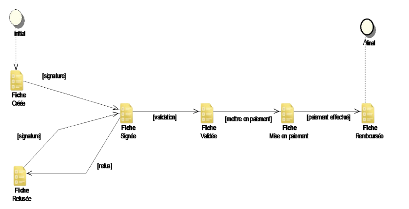 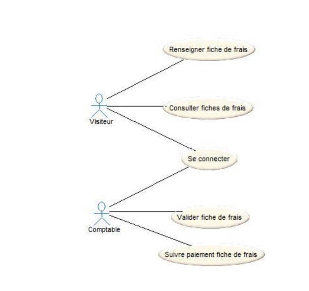
Légende: Diagramme de Cas d'utilisation de GSB JAVA
Projet avec Tuleap
Pour ce projet, j'ai eu l'occasion de travailler en groupe, ce qui a favorisé une collaboration plus avancée. Pour une meilleur garanti gestion de projet et la coordination de notre équipe, on m'a recommander d'utiliser Tuleap en deuxième plan, un outil de gestion de projet en ligne.
Grâce à Tuleap, nous avons pu visualiser l'état d'avancement de chaque tâche, identifier les priorités et maintenir une communication fluide entre les membres de l'équipe. Nous pouvions facilement ajouter des commentaires, partager des ressources et suivre les mises à jour en temps réel.
L'utilisation de Tuleap a grandement facilité la collaboration et la coordination entre les membres de l'équipe. Nous avons pu travailler de manière plus organisée, en gardant une vue d'ensemble sur le projet et en favorisant la transparence dans la répartition des responsabilités.
Légende: Projet Tuleap Exemple